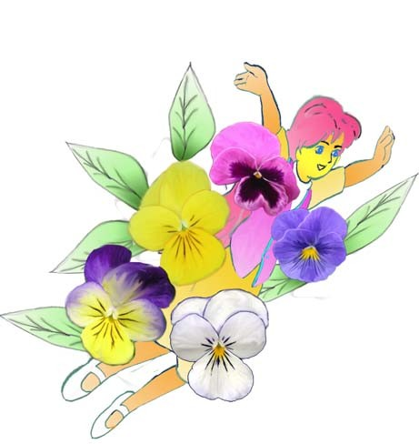
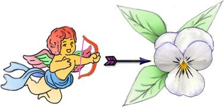

五月花語：三色堇（Pansy） 思慕、誠實的愛
江銘輝 五夢網

圖：三色堇的花姿優雅、花色絢麗，具有層次感的花瓣，每當微風輕拂之際，常常隨風於起舞宛若胡蝶，故叫蝴蝶花，也叫姑娘的花。
三色菫以露天栽種為宜，無論花壇、庭園、盆栽皆適合。不適合種於室內，因為光線不足，生長會遲緩，枝葉無法充分茁壯，導致無法開花，開花後也不應移入室內，以長保花朵壽命。
波蘭國的國花三色堇的花姿優雅、花色絢麗，具有層次感的花瓣，深為少女喜愛，故叫少女的花，或姑娘的花。又每當微風輕拂之際，常常隨風於起舞宛若胡蝶，故也叫蝴蝶花，還有人稱它為三色紫羅蘭，是。
義大利人對三色堇的花語定為“思慕”和“想念我吧”。通常都是指戀人之前的思念。
這是希臘神話中的美麗、淒涼的愛情故事：
天帝宙斯愛上河神的女兒伊娥，觸怒天后希拉，宙斯在希拉百般追尋下，不得不將伊娥變成一頭美麗的牛，到處流浪，宙斯對伊娥感到非常歉疚；也覺得非常悲痛，為思念伊娥那雙燦爛的明眸，便造三色菫以消除相思之苦。
另一個故事是伊娥原是一位英俊美少男的未婚妻，因太陽神阿波羅也愛上她，所以森林女神就把伊娥變成三色堇，讓她躲在森林中。可能因為這個原因，三色堇在初春時便躲在陰暗的叢林默默綻開，不易為人發現，同時也不宜移入室內種植。
希臘神話裡，另有故事說明三色菫為什麼有那麼特別的花形和花色! 據說有一年春天，仙女們聯袂下凡，到塵世的原野上郊遊，她們發現地上美麗的菫花，很是高興! 其中有一位司愛的女神說: 「把我的容貌印在花上吧! 以便天上的惦念和純潔的愛心，帶給地上的每一個人! 我將使你的前途充滿光輝，使見到你的人，都很幸福!」說完， 親吻花三次，就返回天上! 自此以後,這種印著仙女容貌和三次親吻唇印的三色堇,便開遍世界，帶給人們無限的快樂!
又有傳說：三色堇原先是純白色的，調皮的愛神丘比特，他手上的弓箭具有愛情的魔力，射向男女雙方，雙方就會情不自禁的深深相愛。可惜，愛神的箭法有時射不准，導致亂點鴛鴦譜。這一天，愛神心血來潮，想向莊嚴的月神—黛安娜開玩笑，於是向黛安娜放出一箭。誰知道一箭，被忽然的一陣強風吹偏了，這支箭竟然射中白色堇花。白堇花的花心流出了鮮血與淚水，當血與淚乾了之後再也抹不去了。從此白堇花變成了今日的三色堇，這是三色堇的由來。

圖：愛神想向月神—黛安娜開玩笑，於是向黛安娜放出一箭。但箭射偏了，射中白色堇花。白堇花的花心流出了鮮血與淚水，從此白堇花變成了今日的三色堇。
目前三色堇花的色彩、品種比較繁多。除有三色的花外，還有純白、純黃、純紫、紫黑等。另外，還有黃紫、白黑相配及紫、紅、藍、黃、白多彩的混合色等。在法國，三色堇象徵著戀人之間相互忠誠；在波蘭，姑娘只把它送給未婚夫；在英國，它是情人節那天十分重要的花。而希臘的首都雅典也把三色堇當作他們的市花，人們用它當作香水的原料，或把花瓣放在葡萄酒中，擺在餐桌上或飲用。
除了西方外，三色堇在宋朝傳入中國後，色澤斑斕多彩的三色堇，就一直是詩人墨客吟詠的對象，北宋思想家李觏喜愛純白的三色堇，稱它是莊周的翩翩胡蝶，詩吟：「胡蝶生來只愛花，春工描樣作奇葩，莊周有夢何曾覺，冰雪肌膚落誰家。」
清朝女詩人—鍾文真，多才多藝，她有一首歌詠蝴蝶花的詩：「不向花開曬粉衣；偏從花裏鬥芳菲。誰云祝女群邊幻；豈入莊生夢裏飛。曲徑煙濃春欲晚，南園風暖綠初肥。春心素豔渾無邪；好借縢王妙筆揮。」
這首詩借用典故很多，有些文字也須說清楚，讀者較易懂。我將其說明如下，與讀者共享：
粉衣：喻花瓣像蝴蝶彩色的翅膀；
鬥芳菲：爭芳鬥豔；
無那：由無奈，無法描述。
祝女：即晉朝祝英台，相傳她女扮男裝與梁山伯同學三年，心生愛慕，後被父母逼嫁馬文才，梁山伯鬱鬱而死。祝英台過梁墓時，痛哭，墓忽然打開，祝英台跳入，同化蝴蝶。
莊生：即莊子，戰國時哲學家，莊子齊物論：昔者莊周夢為胡（蝴）蝶，栩栩然胡蝶也。
滕王：唐代李元嬰的封號，宣和畫譜說：滕王元嬰，唐宗室，善丹青，喜作蝴蝶。